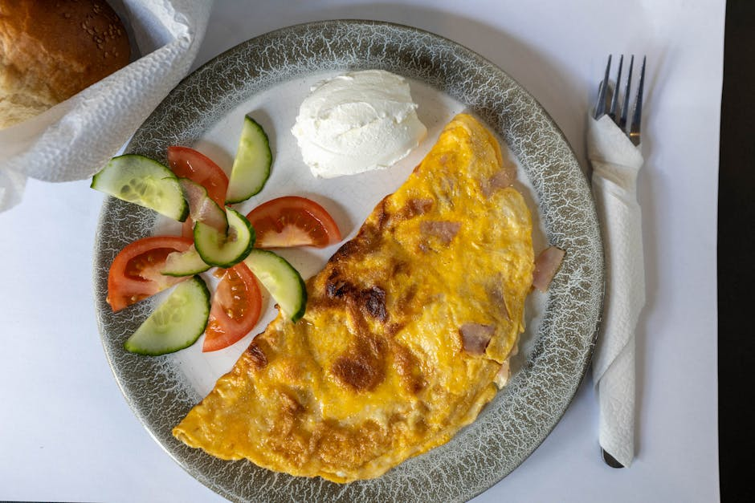

Western Omelette with Egg Whites, Ham & Cheddar

Western Omelette with Egg Whites, Ham & Cheddar delivers 71 g of protein for just 9 g net carbs — a quick breakfast that comes together fast. Exactly the kind of meal that makes a high-protein, low-carb week easy to stick to.
Ingredients
- 3 Large eggs
- 200 g Liquid egg whites
- 100 g Lean diced ham
- 40 g Sharp cheddar cheese
- 60 g Green bell pepper
- 30 g Onion
- 1 tsp Butter
- Salt & black pepper, to taste
Equipment
- non-stick skillet
Method
- Saute diced pepper, onion and ham in butter over medium heat until softened, 3-4 min.
- Whisk whole eggs with egg whites, season, and pour over the filling.
- As the edges set, lift them to let raw egg run underneath.
- Scatter cheddar on one half, fold, and slide onto a plate.
Storage & make-ahead
Fridge: keeps 3–4 days in an airtight container — reheat gently. Most portions freeze well for up to 2 months; thaw overnight.
Tip
A diner classic re-balanced toward protein by boosting the whites and trimming the cheese.
Dietary swaps
Dairy-free: Sharp cheddar cheese → dairy-free cheese; Butter → olive oil or vegan butter (for lactose intolerance or a dairy-free diet)
Full nutrition (estimated, per serving): 540 kcal · 71 g protein · 9 g net carbs · 30 g fat (17 g sat) · 2 g fiber · 5 g sugar · 2340 mg sodium. Allergens: Milk, Egg. Macros are realistic estimates from standard food-composition values; brands and portions vary.
Read the full cookbook — 100 recipes, 3 meal plans & the science →